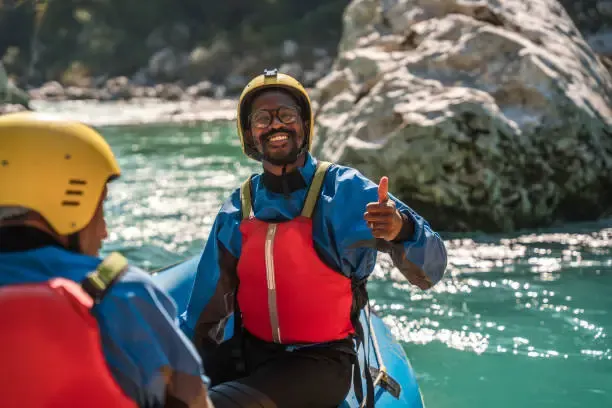

Whitewater rafting is a type of recreation that involves navigating a non-motorized watercraft down free flowing rivers. The business intent is to provide a thrilling and safe experience to individuals and groups for a fee. The business will offer guided rafting trips on various rivers, with different levels of difficulty, to cater to different skill levels and preferences. The business will also provide necessary equipment, such as rafts, paddles, and safety gear, as well as trained guides to ensure the safety of customers.